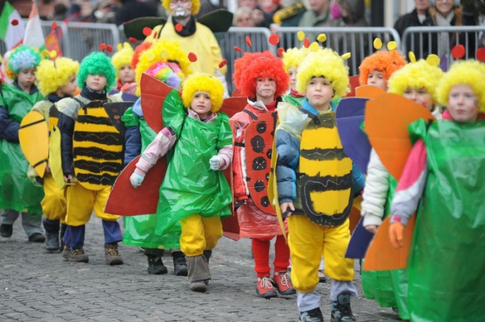

End of February
Samobor Carnival
The most well known event in the town of Samobor – the Carnival takes place every year end of February. It is one of the oldest and biggest carnival celebrations in the continental part of Croatia.
View more